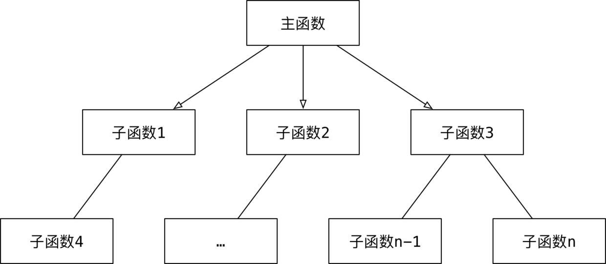

面向对象(OOP)基本概念¶
面向对象编程 —— Object Oriented Programming 简写 OOP
目标¶
- 了解 面向对象 基本概念
01. 面向对象基本概念¶
-
我们之前学习的编程方式就是 面向过程 的
-
面相过程 和 面相对象，是两种不同的 编程方式
-
对比 面向过程 的特点，可以更好地了解什么是 面向对象
1.1 过程和函数（科普）¶
-
过程 是早期的一个编程概念
-
过程 类似于函数，只能执行，但是没有返回值
-
函数 不仅能执行，还可以返回结果
1.2 面相过程 和 面相对象 基本概念¶
1) 面相过程 —— 怎么做？¶
-
把完成某一个需求的
所有步骤从头到尾逐步实现 -
根据开发需求，将某些 功能独立 的代码 封装 成一个又一个 函数
-
最后完成的代码，就是顺序地调用 不同的函数
特点
-
注重 步骤与过程，不注重职责分工
-
如果需求复杂，代码会变得很复杂
-
开发复杂项目，没有固定的套路，开发难度很大！ 
2) 面向对象 —— 谁来做？¶
相比较函数，面向对象 是 更大 的 封装，根据 职责 在 一个对象中 封装 多个方法
-
在完成某一个需求前，首先确定 职责 —— 要做的事情（方法）
-
根据 职责 确定不同的 对象，在 对象 内部封装不同的 方法（多个）
-
最后完成的代码，就是顺序地让 不同的对象 调用 不同的方法
特点
-
注重 对象和职责，不同的对象承担不同的职责
-
更加适合应对复杂的需求变化，是专门应对复杂项目开发，提供的固定套路
-
需要在面向过程基础上，再学习一些面向对象的语法
02¶
类和对象¶
目标¶
-
类和对象的概念
-
类和对象的关系
-
类的设计
01. 类和对象的概念¶
类 和 对象 是 面向对象编程的 两个 核心概念
1.1 类¶
-
类 是对一群具有 相同 特征 或者 行为 的事物的一个统称，是抽象的，不能直接使用
-
特征 被称为 属性
-
行为 被称为 方法
-
-
类 就相当于制造飞机时的**图纸**，是一个 模板，是 负责创建对象的
1.2 对象¶
-
对象 是 由类创建出来的一个具体存在，可以直接使用
-
由 哪一个类 创建出来的 对象，就拥有在 哪一个类 中定义的：
-
属性
-
方法
-
-
对象 就相当于用 图纸 制造 的飞机
在程序开发中，应该 先有类，再有对象
02. 类和对象的关系¶
-
类是模板，对象 是根据 类 这个模板创建出来的，应该 先有类，再有对象
-
类 只有一个，而 对象 可以有很多个
- 不同的对象 之间 属性 可能会各不相同
-
类 中定义了什么 属性和方法，对象 中就有什么属性和方法，不可能多，也不可能少
03. 类的设计¶
在使用面相对象开发前，应该首先分析需求，确定一下，程序中需要包含哪些类！
在程序开发中，要设计一个类，通常需要满足一下三个要素：
-
类名 这类事物的名字，满足大驼峰命名法
-
属性 这类事物具有什么样的特征
-
方法 这类事物具有什么样的行为
大驼峰命名法¶
CapWords
-
每一个单词的首字母大写
-
单词与单词之间没有下划线
3.1 类名的确定¶
名词提炼法 分析 整个业务流程，出现的 名词，通常就是找到的类
3.2 属性和方法的确定¶
-
对 对象的特征描述，通常可以定义成 属性
-
对象具有的行为（动词），通常可以定义成 方法
提示：需求中没有涉及的属性或者方法在设计类时，不需要考虑
练习 1¶
需求
-
小明 今年 18 岁，身高 1.75，每天早上 跑 完步，会去 吃 东西
-
小美 今年 17 岁，身高 1.65，小美不跑步，小美喜欢 吃 东西
练习 2¶
需求
-
一只 黄颜色 的 狗狗 叫 大黄
-
看见生人 汪汪叫
-
看见家人 摇尾巴
03¶
面相对象基础语法¶
目标¶
-
dir内置函数 -
定义简单的类（只包含方法）
-
方法中的
self参数 -
初始化方法
-
内置方法和属性
01. dir 内置函数（知道）¶
- 在
Python中 对象几乎是无所不在的，我们之前学习的 变量、数据、函数 都是对象
在 Python 中可以使用以下两个方法验证：
-
在 标识符 / 数据 后输入一个
.，然后按下TAB键，iPython会提示该对象能够调用的 方法列表 -
使用内置函数
dir传入 标识符 / 数据，可以查看对象内的 所有属性及方法
提示 __方法名__ 格式的方法是 Python 提供的 内置方法 / 属性，稍后会给大家介绍一些常用的 内置方法 / 属性
| 序号 | 方法名 | 类型 | 作用 |
|---|---|---|---|
| 01 | __new__ |
方法 | 创建对象**时，会被 **自动 调用 |
| 02 | __init__ |
方法 | 对象被初始化**时，会被 **自动 调用 |
| 03 | __del__ |
方法 | 对象被从内存中销毁**前，会被 **自动 调用 |
| 04 | __str__ |
方法 | 返回**对象的描述信息**，print 函数输出使用 |
提示 利用好 dir() 函数，在学习时很多内容就不需要死记硬背了
02. 定义简单的类（只包含方法）¶
面向对象 是 更大 的 封装，在 一个类中 封装 多个方法，这样 通过这个类创建出来的对象，就可以直接调用这些方法了！
02. 定义简单的类（只包含方法）¶
面向对象 是 更大 的 封装，在 一个类中 封装 多个方法，这样 通过这个类创建出来的对象，就可以直接调用这些方法了！
2.1 定义只包含方法的类¶
- 在
Python中要定义一个只包含方法的类，语法格式如下：
class 类名: def 方法1(self, 参数列表): pass def 方法2(self, 参数列表): pass
- 方法 的定义格式和之前学习过的**函数** 几乎一样
- 区别在于第一个参数必须是
self，大家暂时先记住，稍后介绍self
注意：类名 的 命名规则 要符合 大驼峰命名法
2.2 创建对象¶
- 当一个类定义完成之后，要使用这个类来创建对象，语法格式如下：
对象变量 = 类名()
2.3 第一个面向对象程序¶
需求
- 小猫 爱 吃 鱼，小猫 要 喝 水
分析
-
定义一个猫类
Cat -
定义两个方法
eat和drink -
按照需求 —— 不需要定义属性
class Cat: def eat(self): print("小猫爱吃鱼") def drink(self): print("小猫要喝水") # 创建猫对象 tom = Cat() tom.eat() tom.drink() print(tom) addr = id(tom) #这个对象在内存的地址 print("%x" % addr)
小猫爱吃鱼 小猫要喝水 <__main__.Cat object at 0x000001734D4F9748> 1734d4f9748
引用概念的强调¶
在面向对象开发中，**引用**的概念是同样适用的！
-
在
Python中使用类 创建对象之后，tom变量中 仍然记录的是 对象在内存中的地址 -
也就是
tom变量 引用 了 新建的猫对象 -
使用
print输出 对象变量，默认情况下，是能够输出这个变量 引用的对象 是 由哪一个类创建的对象，以及 在内存中的地址（十六进制表示）
提示：在计算机中，通常使用 十六进制 表示 内存地址
十进制 和 十六进制 都是用来表达数字的，只是表示的方式不一样
十进制 和 十六进制 的数字之间可以来回转换
%d可以以 10 进制 输出数字
%x可以以 16 进制 输出数字
案例进阶 —— 使用 Cat 类再创建一个对象¶
class Cat: def eat(self): print("小猫爱吃鱼") def drink(self): print("小猫要喝水") # 创建猫对象 tom = Cat() tom.eat() tom.drink() print(tom) # 再创建一个猫对象 lazy_cat = Cat() lazy_cat.eat() lazy_cat.drink() print(lazy_cat) lazy_cat2 = lazy_cat print(lazy_cat2)
提问：
tom和lazy_cat是同一个对象吗？ 执行结果:不是一个对象小猫爱吃鱼 小猫要喝水 <__main__.Cat object at 0x000001734D4F9860> 小猫爱吃鱼 小猫要喝水 <__main__.Cat object at 0x000001734D4F95C0> <__main__.Cat object at 0x000001734D4F95C0>
03. 方法中的 self 参数¶
3.1 案例改造 —— 给对象增加属性¶
-
在
Python中，要 给对象设置属性，非常的容易，但是不推荐使用- 因为：对象属性的封装应该封装在类的内部
-
只需要在 类的外部的代码 中直接通过
.设置一个属性即可
注意：这种方式虽然简单，但是不推荐使用！
tom.name = "Tom" ... lazy_cat.name = "大懒猫"
3.2 使用 self 在方法内部输出每一只猫的名字¶
由 哪一个对象 调用的方法，方法内的
self就是 哪一个对象的引用
-
在类封装的方法内部，
self就表示 当前调用方法的对象自己 -
调用方法时，程序员不需要传递
self参数 -
在方法内部
-
可以通过
self.访问对象的属性 -
也可以通过
self.调用其他的对象方法
-
-
改造代码如下：
执行结果:class Cat: def eat(self): # 哪一个对象调用的方法，self就是哪一个对象的引用 print("%s 爱吃鱼" % self.name) def drink(self): print("%s 要喝水" % self.name) # 创建猫对象 tom = Cat() # 可以使用 .属性名 利用赋值语句就可以了 tom.name = "Tom" tom.eat() tom.drink() print(tom) # 再创建一个猫对象 lazy_cat = Cat() lazy_cat.name = "大懒猫" lazy_cat.eat() lazy_cat.drink() print(lazy_cat) #%s string型 表示格式化一个对象为字符
Tom 爱吃鱼 Tom 要喝水 <__main__.Cat object at 0x000001734D549198> 大懒猫 爱吃鱼 大懒猫 要喝水 <__main__.Cat object at 0x000001734D4F9A58>

-
在 类的外部，通过
变量名.访问对象的 属性和方法 -
在 类封装的方法中，通过
self.访问对象的 属性和方法
04. 初始化方法¶
4.1 之前代码存在的问题 —— 在类的外部给对象增加属性¶
- 将案例代码进行调整，先调用方法 再设置属性，观察一下执行效果
tom = Cat() tom.drink() tom.eat() tom.name = "Tom" print(tom)
- 程序执行报错如下：
AttributeError: 'Cat' object has no attribute 'name' 属性错误：'Cat' 对象没有 'name' 属性
提示
-
在日常开发中，不推荐在 类的外部 给对象增加属性
- 如果**在运行时，没有找到属性，程序会报错**
-
对象应该包含有哪些属性，应该 封装在类的内部
4.2 初始化方法¶
-
当使用
类名()创建对象时，会 自动 执行以下操作：-
为对象在内存中 分配空间 —— 创建对象
-
为对象的属性 设置初始值 —— 初始化方法(
init)
-
-
这个 初始化方法 就是
__init__方法，__init__是对象的**内置方法**
__init__方法是 专门 用来定义一个类 具有哪些属性的方法！
在 Cat 中增加 __init__ 方法，验证该方法在创建对象时会被自动调用
class Cat: """这是一个猫类""" def __init__(self): print("初始化方法")
4.3 在初始化方法内部定义属性¶
-
在
__init__方法内部使用self.属性名 = 属性的初始值就可以 定义属性 -
定义属性之后，再使用
Cat类创建的对象，都会拥有该属性class Cat: def __init__(self, new_name): print("这是一个初始化方法") # self.属性名 = 属性的初始值 # self.name = "Tom" self.name = new_name def eat(self): print("%s 爱吃鱼" % self.name) # 使用类名()创建对象的时候，会自动调用初始化方法 __init__ tom = Cat("Tom") print(tom.name) lazy_cat = Cat("大懒猫") lazy_cat.eat()
4.4 改造初始化方法 —— 初始化的同时设置初始值¶
-
在开发中，如果希望在 创建对象的同时，就设置对象的属性，可以对
__init__方法进行 改造-
把希望设置的属性值，定义成
__init__方法的参数 -
在方法内部使用
self.属性 = 形参接收外部传递的参数 -
在创建对象时，使用
类名(属性1, 属性2...)调用class Cat: def __init__(self, name): print("初始化方法 %s" % name) self.name = name ... tom = Cat("Tom") ... lazy_cat = Cat("大懒猫") ...
-
05. 内置方法和属性¶
| 序号 | 方法名 | 类型 | 作用 |
|---|---|---|---|
| 01 | __del__ |
方法 | 对象被从内存中销毁**前，会被 **自动 调用 |
| 02 | __str__ |
方法 | 返回**对象的描述信息**，print 函数输出使用 |
5.1 __del__ 方法（知道）¶
-
在
Python中-
当使用
类名()创建对象时，为对象 分配完空间**后，**自动 调用__init__方法 -
当一个 对象被从内存中销毁 前，会 自动 调用
__del__方法
-
-
应用场景
-
__init__改造初始化方法，可以让创建对象更加灵活 -
__del__如果希望在对象被销毁前，再做一些事情，可以考虑一下__del__方法
-
-
生命周期
-
一个对象从调用
类名()创建，生命周期开始 -
一个对象的
__del__方法一旦被调用，生命周期结束 -
在对象的生命周期内，可以访问对象属性，或者让对象调用方法
# -*- coding: utf-8 -*- """ Created on Wed Apr 17 21:56:22 2019 @author: zangz """ class Cat: def __init__(self, new_name): self.name = new_name print("%s 来了" % self.name) def __del__(self): print("%s 我去了" % self.name) # tom 是一个全局变量 tom = Cat("Tom") print(tom.name) # del 关键字可以删除一个对象 del tom print("-" * 50)
-
5.2 __str__ 方法¶
-
在
Python中，使用print输出 对象变量，默认情况下，会输出这个变量 引用的对象 是 由哪一个类创建的对象，以及 在内存中的地址（十六进制表示） -
如果在开发中，希望使用
print输出 对象变量 时，能够打印 自定义的内容，就可以利用__str__这个内置方法了
注意：
__str__方法必须返回一个字符串
class Cat: def __init__(self, new_name): self.name = new_name print("%s 来了" % self.name) def __del__(self): print("%s 我去了" % self.name) def __str__(self): # 必须返回一个字符串 return "我是小猫[%s]" % self.name # tom 是一个全局变量 tom = Cat("Tom") print(tom)
面向对象封装案例¶
目标¶
- 封装
- 小明爱跑步
- 存放家具
01. 封装¶
- 封装 是面向对象编程的一大特点
- 面向对象编程的 第一步 —— 将 属性 和 方法 封装 到一个抽象的 类 中
- 外界 使用 类 创建 对象，然后 让对象调用方法
- 对象方法的细节 都被 封装 在 类的内部
02. 小明爱跑步¶
需求
- 小明 体重
75.0公斤 - 小明每次 跑步 会减肥
0.5公斤 - 小明每次 吃东西 体重增加
1公斤
[图片上传失败...(image-818ad6-1555499248411)]
提示：在 对象的方法内部，是可以 直接访问对象的属性 的！
- 代码实现：
class Person: """人类""" def __init__(self, name, weight): self.name = name self.weight = weight def __str__(self): return "我的名字叫 %s 体重 %.2f 公斤" % (self.name, self.weight) def run(self): """跑步""" print("%s 爱跑步，跑步锻炼身体" % self.name) self.weight -= 0.5 def eat(self): """吃东西""" print("%s 是吃货，吃完这顿再减肥" % self.name) self.weight += 1 xiaoming = Person("小明", 75) xiaoming.run() xiaoming.eat() xiaoming.eat() print(xiaoming)
2.1 小明爱跑步扩展 —— 小美也爱跑步¶
需求
- 小明 和 小美 都爱跑步
- 小明 体重
75.0公斤 - 小美 体重
45.0公斤 - 每次 跑步 都会减少
0.5公斤 - 每次 吃东西 都会增加
1公斤
提示
- 在 对象的方法内部，是可以 直接访问对象的属性 的
- 同一个类 创建的 多个对象 之间，属性 互不干扰！
03. 摆放家具¶
需求
- 房子(House) 有 户型、总面积 和 家具名称列表
- 新房子没有任何的家具
- 家具(HouseItem) 有 名字 和 占地面积，其中
- 席梦思(bed) 占地
4平米 - 衣柜(chest) 占地
2平米 - 餐桌(table) 占地
1.5平米
- 席梦思(bed) 占地
- 将以上三件 家具 添加 到 房子 中
- 打印房子时，要求输出：户型、总面积、剩余面积、家具名称列表
剩余面积
- 在创建房子对象时，定义一个 剩余面积的属性，初始值和总面积相等
- 当调用
add_item方法，向房间 添加家具 时，让 剩余面积 -= 家具面积
思考：应该先开发哪一个类？
答案 —— 家具类
- 家具简单
- 房子要使用到家具，被使用的类，通常应该先开发
3.1 创建家具¶
class HouseItem: def __init__(self, name, area): """ :param name: 家具名称 :param area: 占地面积 """ self.name = name self.area = area def __str__(self): return "[%s] 占地面积 %.2f" % (self.name, self.area) # 1. 创建家具 bed = HouseItem("席梦思", 4) chest = HouseItem("衣柜", 2) table = HouseItem("餐桌", 1.5) print(bed) print(chest) print(table)
小结
- 创建了一个 家具类，使用到
__init__和__str__两个内置方法 - 使用 家具类 创建了 三个家具对象，并且 输出家具信息
3.2 创建房间¶
class House: def __init__(self, house_type, area): """ :param house_type: 户型 :param area: 总面积 """ self.house_type = house_type self.area = area # 剩余面积默认和总面积一致 self.free_area = area # 默认没有任何的家具 self.item_list = [] def __str__(self): # Python 能够自动的将一对括号内部的代码连接在一起 return ("户型：%s\n总面积：%.2f[剩余：%.2f]\n家具：%s" % (self.house_type, self.area, self.free_area, self.item_list)) def add_item(self, item): print("要添加 %s" % item) ... # 2. 创建房子对象 my_home = House("两室一厅", 60) my_home.add_item(bed) my_home.add_item(chest) my_home.add_item(table) print(my_home)
小结
- 创建了一个 房子类，使用到
__init__和__str__两个内置方法 - 准备了一个
add_item方法 准备添加家具 - 使用 房子类 创建了 一个房子对象
- 让 房子对象 调用了三次
add_item方法，将 三件家具 以实参传递到add_item内部
3.3 添加家具¶
需求
- 1> 判断 家具的面积 是否 超过剩余面积，如果超过，提示不能添加这件家具
- 2> 将 家具的名称 追加到 家具名称列表 中
- 3> 用 房子的剩余面积 - 家具面积
def add_item(self, item): print("要添加 %s" % item) # 1. 判断家具面积是否大于剩余面积 if item.area > self.free_area: print("%s 的面积太大，不能添加到房子中" % item.name) return # 2. 将家具的名称追加到名称列表中 self.item_list.append(item.name) # 3. 计算剩余面积 self.free_area -= item.area
class HouseItem: def __init__(self, name, area): self.name = name self.area = area def __str__(self): return "[%s] 占地 %.2f" % (self.name, self.area) class House: def __init__(self, house_type, area): self.house_type = house_type self.area = area # 剩余面积 self.free_area = area # 家具名称列表 self.item_list = [] def __str__(self): # Python 能够自动的将一对括号内部的代码连接在一起 return ("户型：%s\n总面积：%.2f[剩余：%.2f]\n家具：%s" % (self.house_type, self.area, self.free_area, self.item_list)) def add_item(self, item): print("要添加 %s" % item) # 1. 判断家具的面积 if item.area > self.free_area: print("%s 的面积太大了，无法添加" % item.name) return # 2. 将家具的名称添加到列表中 self.item_list.append(item.name) # 3. 计算剩余面积 self.free_area -= item.area # 1. 创建家具 bed = HouseItem("席梦思", 40) chest = HouseItem("衣柜", 2) table = HouseItem("餐桌", 20) print(bed) print(chest) print(table) # 2. 创建房子对象 my_home = House("两室一厅", 60) my_home.add_item(bed) my_home.add_item(chest) my_home.add_item(table) print(my_home)
3.4 小结¶
- 主程序只负责创建 房子 对象和 家具 对象
- 让 房子 对象调用
add_item方法 **将家具添加到房子**中 - 面积计算、剩余面积、家具列表 等处理都被 封装 到 房子类的内部
面向对象封装案例 II¶
哪个类先被使用就先定义哪个类¶
目标¶
- 士兵突击案例
- 身份运算符
封装
- 封装 是面向对象编程的一大特点
- 面向对象编程的 第一步 —— 将 属性 和 方法 封装 到一个抽象的 类 中
- 外界 使用 类 创建 对象，然后 让对象调用方法
- 对象方法的细节 都被 封装 在 类的内部
一个对象的 属性 可以是 另外一个类创建的对象
01. 士兵突击¶
需求
- 士兵 许三多 有一把 AK47
- 士兵 可以 开火
- 枪 能够 发射 子弹
- 枪 装填 装填子弹 —— 增加子弹数量

1.1 开发枪类¶
shoot 方法需求
- 1> 判断是否有子弹，没有子弹无法射击
- 2> 使用
print提示射击，并且输出子弹数量
class Gun: def __init__(self, model): # 枪的型号 self.model = model # 子弹数量 self.bullet_count = 0 def add_bullet(self, count): self.bullet_count += count def shoot(self): # 判断是否还有子弹 if self.bullet_count <= 0: print("没有子弹了...") return # 发射一颗子弹 self.bullet_count -= 1 print("%s 发射子弹[%d]..." % (self.model, self.bullet_count)) # 创建枪对象 ak47 = Gun("ak47") ak47.add_bullet(50) ak47.shoot()
1.2 开发士兵类¶
假设：每一个新兵 都 没有枪
定义没有初始值的属性
在定义属性时，如果 不知道设置什么初始值，可以设置为 None
None关键字 表示 什么都没有- 表示一个 空对象，没有方法和属性，是一个特殊的常量
- 可以将
None赋值给任何一个变量
fire 方法需求
- 1> 判断是否有枪，没有枪没法冲锋
- 2> 喊一声口号
- 3> 装填子弹
- 4> 射击
class Soldier: def __init__(self, name): # 姓名 self.name = name # 枪，士兵初始没有枪 None 关键字表示什么都没有 self.gun = None def fire(self): # 1. 判断士兵是否有枪 if self.gun is None: print("[%s] 还没有枪..." % self.name) return # 2. 高喊口号 print("冲啊...[%s]" % self.name) # 3. 让枪装填子弹 self.gun.add_bullet(50) # 4. 让枪发射子弹 self.gun.shoot()
class Gun: def __init__(self, model): # 1. 枪的型号 self.model = model # 2. 子弹的数量 self.bullet_count = 0 def add_bullet(self, count): self.bullet_count += count def shoot(self): # 1. 判断子弹数量 if self.bullet_count <= 0: print("[%s] 没有子弹了..." % self.model) return # 2. 发射子弹，-1 self.bullet_count -= 1 # 3. 提示发射信息 print("[%s] 突突突... [%d]" % (self.model, self.bullet_count)) class Soldier: def __init__(self, name): # 1. 姓名 self.name = name # 2. 枪 - 新兵没有枪 self.gun = None def fire(self): # 1. 判断士兵是否有枪 # if self.gun == None: if self.gun is None: print("[%s] 还没有枪..." % self.name) return # 2. 高喊口号 print("冲啊...[%s]" % self.name) # 3. 让枪装填子弹 self.gun.add_bullet(50) # 4. 让枪发射子弹 self.gun.shoot() # 1. 创建枪对象 ak47 = Gun("AK47") # 2. 创建许三多 xusanduo = Soldier("许三多") xusanduo.gun = ak47 #将对象传递给这个self.gun使用这个对象中的函数方法 xusanduo.fire() print(xusanduo.gun)
小结
- 创建了一个 士兵类，使用到
__init__内置方法 - 在定义属性时，如果 不知道设置什么初始值，可以设置为
None - 在 封装的 方法内部，还可以让 自己的 使用其他类创建的对象属性 调用已经 封装好的方法
02. 身份运算符¶
身份运算符用于 比较 两个对象的 内存地址 是否一致 —— 是否是对同一个对象的引用
- 在
Python中针对None比较时，建议使用is判断
| 运算符 | 描述 | 实例 |
|---|---|---|
| is | is 是判断两个标识符是不是引用同一个对象 | x is y，类似 id(x) == id(y) |
| is not | is not 是判断两个标识符是不是引用不同对象 | x is not y，类似 id(a) != id(b) |
is 与 == 区别：¶
is 用于判断 两个变量 引用对象是否为同一个
== 用于判断 引用变量的值 是否相等
>>> a = [1, 2, 3] >>> b = [1, 2, 3] >>> b is a False >>> b == a True